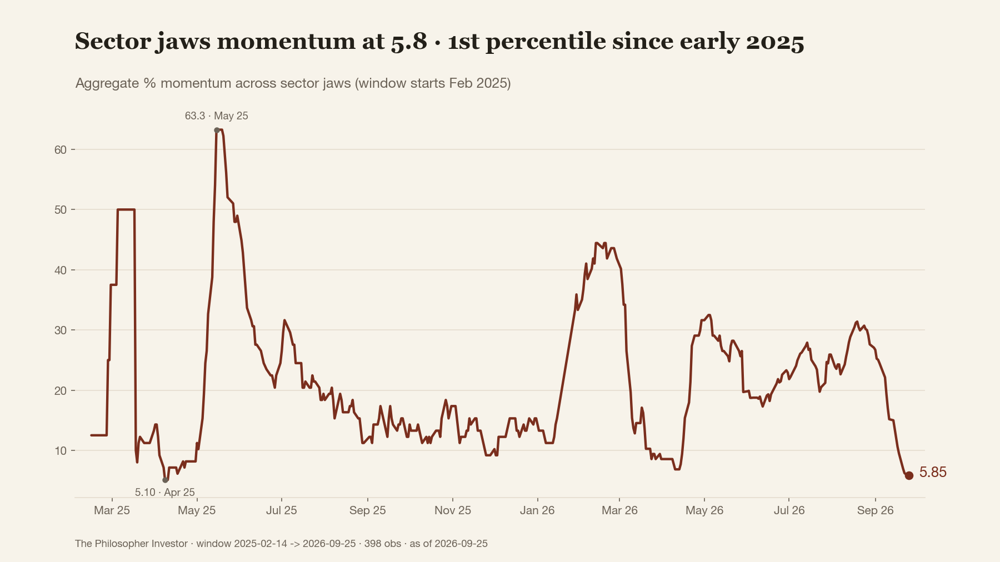
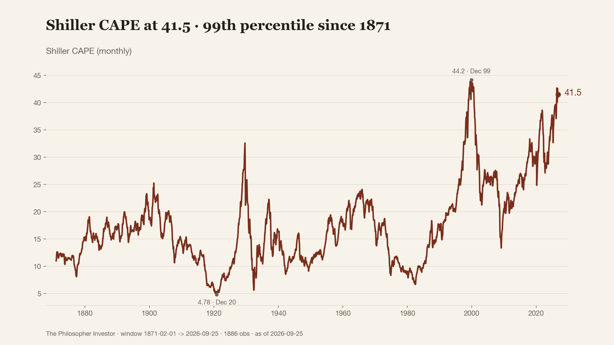
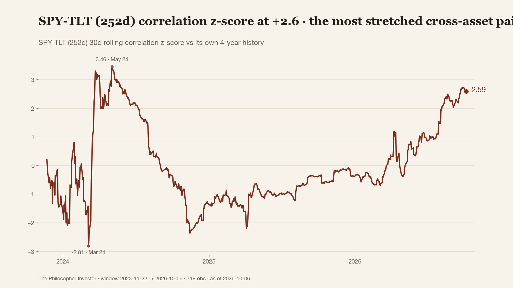
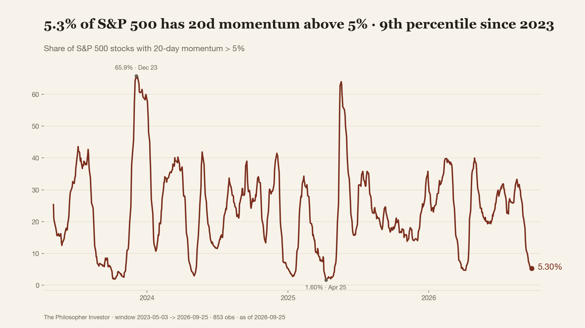
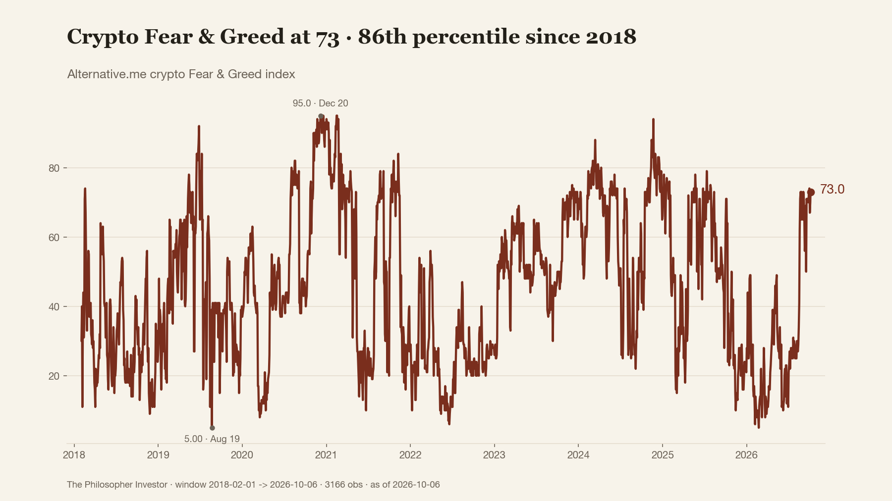
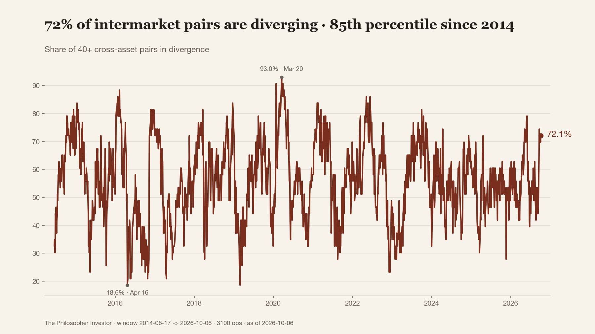
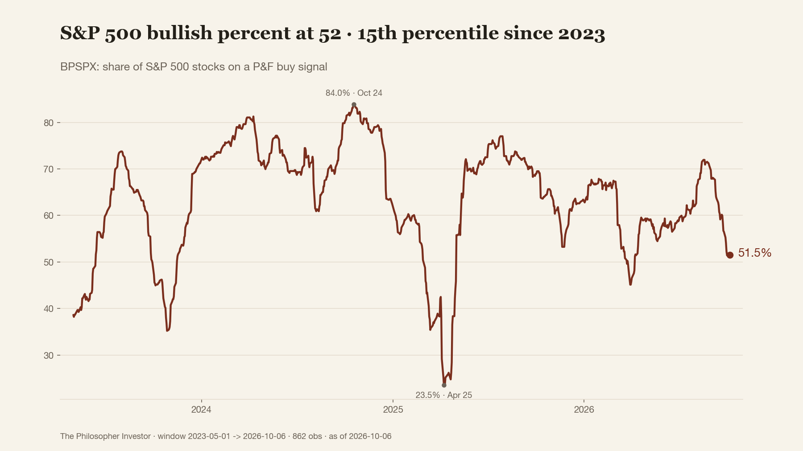
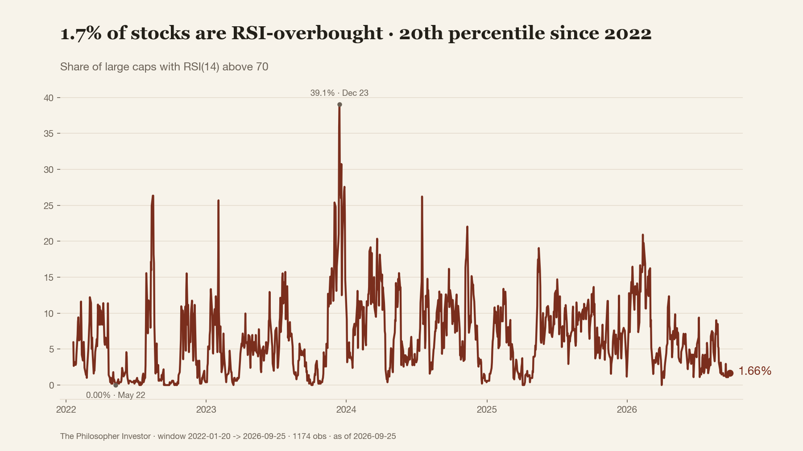

8 candidates · data through 2026-09-27
4 · Seulement 5,3 % du S&P 500 garde un momentum 20j au-dessus de 5 %, soit le 9e percentile depuis 2023, alors que l'indice campe à 1,6 % de son plus haut. C'est le coeur du lead.
3 · La summation NASI à 1910 tombe au 5e percentile depuis 2022. Même vide de participation, mesuré autrement, sur le Nasdaq. Famille breadth : descriptif hors extrêmes.
8 · Seulement 1,66 % des titres sont en surachat RSI, 20e percentile depuis 2022. Un plus haut d'indice sans titres tendus, on le décrit, aucun claim.
2 · CAPE à 41,5, 99e percentile depuis 1871, encore sous le record de 44,19 de décembre 1999. Cadre de valorisation sur 5 à 10 ans, jamais du timing.
7 · Crypto Fear & Greed à 70, 80e percentile depuis 2018. L'appétit pour le risque se loge ailleurs que dans le breadth actions. Série non testée, contexte seul.
Dropped: 1 5 6







